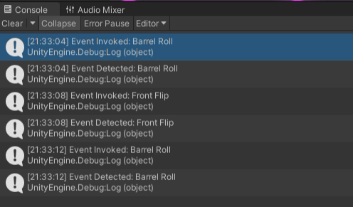

For the Capstone Project of my
Game Development Specialization,
I wanted to do something unique, that acted as a culmination of my learning and proof of my abilities within the Unity Engine. The assignment was free-form, as long as we presented a functional game by the deadline. I decided that I wanted to explore the endless runner genre, while combining it with the speed and thrill of racing. The result is this Synthwave-inspired game, where you endlessly drive into the matrix horizon, collecting coins and flipping through the air for a high-score.
Endless Platform Generation
As the car progresses through the world, new platforms are created and randomly populated with ramps, obstacles and power ups. This is accomplished through Trigger Gates placed at the end of each active platform and a Linked List of active platforms. When the car passes through a gate, the first platform of the Linked List is moved to a new position at the end of the chain, and new objects are generated on the platform. There are always a fixed number of platforms active at one time
Trick/Flip Recognition
One of the main mechanics is the ability to do tricks in the air. The car can flip forward, backwards, barrel roll, or do a combination of forward and sideways motion. I implemented a trick recognition system that can assign points based on the number of flips the player does. The system does nothing as the car is on the ground, but when the car is airborne, it starts to track the change in the car’s x and y rotation changes. Every time a car’s rotation passes a multiple of 360 degrees, points are awarded based on the flip. Additionally, if a flip is stopped midway through, the car will rotate back to 0 before landing.
Event System

Many components of the game rely on an Events System to communicate between each other. Both the platform generation and flip recognition mentioned above, plus any communication with the Heads Up Display utilizes events. By creating an event manager, objects can invoke and listen for events. When an event is invoked, any listeners subscribed to that event will be notified and begin the methods required by the method.
For example, any time the car collides with a coin, an event is invoked by the coin object. The HUD coin counter is listening for this event, and increments the counter every time the event is invoked.